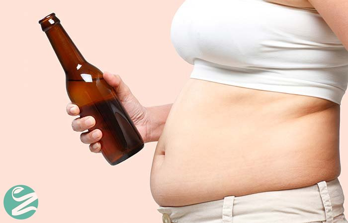
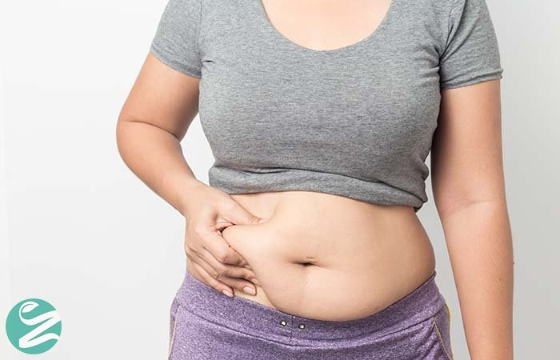
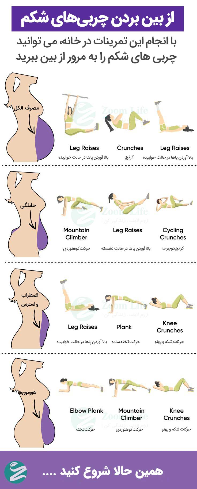

چاقی شکم؛ انواع چاقی شکم و روشهای از بین بردن چربی شکم
بزرگ شدن شکم، باعث ایجاد احساسی بد در ما میشود. همگی ما لباسهای بسیار زیادی را تنها به این دلیل دور
انداختهایم که شکمهایمان کمی بزرگ شده و نمایان هستند!
آیا متوجه شدهاید زمانی که میخواهیم وزن کم کنیم، همهی چیزها در مقایسه با حجم کاری که باید برای کاهش چربیهای
دور شکم انجام دهیم، کم اهمیت جلوه میکنند. زنان و مردان دوست ندارند شکمی بزرگ و برآمده داشته باشند؛ اما مشکل این
است که علی رغم تمامی ورزشها و رژیمهای غذایی، چربی شکم آب نمیشود و این موضوع برای بسیاری از افراد به یک کابوس
تبدیل شده است. چربی شکم باعث بروز مشکلات زیادی میشود؛ همانند افزایش بیماریها و مشکلات سلامتی.
آیا تا به حال به این موضوع فکر کردهاید که دلیل این مشکل و ماندگاری چربیهای شکم این است که آن را با روش صحیحی
درمان نمیکنیم؟ اولین نکتهای که باید به آن توجه کنید این است که چربیهای شکم انواع مختلفی داشته و هر یک به
دلایل مختلفی به وجود میآیند. اگر دلایل ایجاد شدن آنها را ندانید، چگونه میتوانید چربیهایتان را آب کنید؟
دلایل ایجاد شدن شکمی بزرگ
ما در ادامه انواع مختلف چربی شکم، دلایل ایجاد شدنشان و روش رهایی از آنها را توضیح دادهایم؛ اگر میخواهید بدانید چه چیزی باعث بزرگ شدن شکمتان شده است، این مطلب را تا پایان مطالعه کنید.

مصرف الکل
این موضوع کاملاً بدیهی است که اگر بیش از اندازه الکل بنوشید، نشانههای آن به تدریج و به خصوص بر روی شکم ظاهر
خواهند شد. بهترین راه برای مقابله با این نوع برآمدگی شکم، کاهش نوشیدن الکل است.
اما چرا الکل باعث بزرگ شدن شکم میشود؟ اولاً به این دلیل که الکل اختلالی در هضم غذا به وجود آورده و سلامتی را به
خطر میاندازد؛ دوماً، الکل دارای کالری بسیاری است و کالریها عامل اصلی بزرگ شدن شکم هستند.
حاملگی
حاملگی، دوست داشتنیترین برآمدگی شکم است و چاقی حاصل از آن مهمترین مسئله برای مادر و فرزند است؛ زیرا چربی موجود
در شکم مادر از فرزند داخل رحم او محافظت میکند. هرچند پس از به دنیا آمدن فرزند، به این چربی محافظ نیازی نبوده و
میتوانید تمامی چربیهای اضافی را آب کنید.
اما این موضوع فقط با حرف آسان است! در هر صورت، بهترین روش برای لاغر کردن شکم این است که پس از مشورت با پزشکتان،
کمی ورزش یا یوگا انجام دهید؛ زیرا هیچ چیزی، حتی آب کردن این چربی مهمتر از سلامتی شما و فرزندتان نیست.

اضطراب و استرس
آیا به نظرتان این موضوع نباید برعکس باشد و اضطراب باعث کاهش وزن شود؟ اما متاسفانه اضطراب باعث چاقی میشود. زمانی
که
تحت استرس زیادی قرار دارید، بدن، به خصوص در اطراف شکم، چربی ذخیره میکند. این موضوع به این دلیل رخ میدهد که ما
غذاهای ناسالم زیادی خورده و به اندازهی کافی استراحت نمیکنیم.
پیشنهاد میشود حداقل مقدار کمی فعالیت بدنی در برنامهی روزانهتان بگنجانید و از غذاهای ناسالم و چرب دوری کنید.
این
موضوع به همراه استراحت کافی و کاهش کمخوابی نه تنها باعث لاغری شکم میشود، بلکه برای سلامتی بدن و ذهن نیز مفید
است.

هورمونها
گاهی اوقات ما هیچ نقشی در شکل گیری چربی شکم نداریم و شکم به دلیل عدم توازن هورمونها بزرگ میشود. در این صورت، کار زیادی از دست شما بر نمیآید. هرچند در کنار داروهایی که پزشکتان تجویز میکند، بهتر است تا حد ممکن یک زندگی سالم را در پیش بگیرید.
نفخ شکم
هیچ چیزی بدتر از شکمی برآمده به دلیل نفخ نیست. این موضوع نه تنها باعث ناراحتی فرد میشود، بلکه مضرات بسیاری برای
سلامتی داشته و در آینده مشکلاتی جدی همانند زخم معده ایجاد خواهد کرد. اگر آن را به موقع درمان نکنید، ممکن است به
سرطان معده تبدیل شود.
بهترین راه برای مقابله با این مشکل این است که از خوردن غذاهایی که باعث نفخ شده اجتناب کنید تا شکمتان برآمدگی
نداشته باشد. بدین منظور بهتر است از غذاهای ناسالم و چرب اجتناب کرده و فقط از غذاهای سالم استفاده کنید.
بهترین تمرینات برای از بین بردن چربی شکم
میتوانید در خانه با استفاده از حرکات ورزشی، چربی شکم را به مرور از بین ببرید.

آیا کسی را میشناسید که از چاقی شکم رنج ببرد؟ این مطلب را برایش بفرستید! به نظرتان کدام یک از موارد گفته شده باعث برآمدگی شکمتان شده است؟